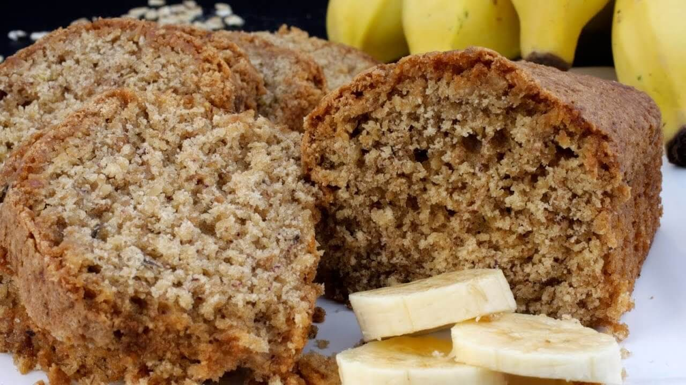

Ingredientes
Modo de Preparo
Informações Nutricionais
| INFORMAÇÃO NUTRICIONAL | ||
|---|---|---|
| PORÇÃO DE 1 pedaço (50g) | % VD(*) | |
| VALOR ENERGÉTICO | 120 kcal = 502 kj | 0% |
| PROTEÍNAS | 15g | 9% |
| CARBOIDRATOS | 32g | 16% |
| GORDURAS TOTAIS | 10g | 5% |
| GORDURAS SATURADAS | 2,5g | 2% |
| GORDURAS TRANS | 0,5g | 1% |
| FIBRA ALIMENTAR | 35g | 17% |
| SÓDIO | 2,5mg | 5% |
| (*)%Valores Diários de Referência com base em uma dieta de 2000 kcal, ou 8400 kj. Seus Valores diários podem ser maiores ou menores dependendo de suas necessidades energéticas. | ||
*Valores fictícios*
Fotos
Tempo de Preparo
| Preparo |  |
Serve Até | |
|---|---|---|---|
| 20 min | 10 pedaços |
Relacionados
Assista vídeos de receitas relacionadas